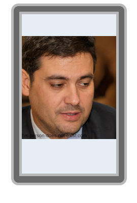

Recruté en 2030 par Gabriel Frouard, Aloïs Barraud devient le cerveau derrière l'IA de la "Cyclosphere". Leader acharné, il dirige l'équipe de développement qui permet à SkyMotors Company de dominer le marché mondial grâce à ses systèmes anti-crash. À cette époque, il est pressenti pour devenir le successeur naturel du "Goat".
C'est également sous son impulsion que sont lancées les démarches d'expansion européenne qui porteront l'entreprise à 158 concessionnaires sur le continent, ainsi que les premières négociations ayant abouti à l'entrée de
Melon Musk
au capital de SkyMotors en 2036. Ces deux chantiers stratégiques, dont il est le véritable architecte, seront ultérieurement attribués à son successeur
Raphaël Hidier,
qui n'en était à l'époque que le coordinateur technique.
Le destin d'Aloïs bascule lors du test de la "SkyMotors : BlueOffice". Le véhicule percute violemment l'athlète Lucien Dubreuil. Bien que les enquêtes internes du Projet NorWédi révèlent que Gabriel Frouard était aux commandes, ce dernier manipule les preuves pour faire porter le chapeau à Barraud. Aloïs est instantanément renvoyé et banni de l'industrie technologique.
| Période | Statut | Lieu |
|---|---|---|
| 2038 - 2039 | Paria industriel / Chômage forcé | Genève / Inconnu |
| 2040 - Présent | Spécialiste Flux Alimentaire (Senior Pizza) | Giovanni's Pizza (Genève) |
Aujourd'hui, sous l'alias "Senior Pizza", il applique les algorithmes de SkyMotors pour optimiser la cuisson des pizzas chez Giovanni Tibiano. Son "Speedy Pizza System" permet de livrer une pizza avant même que le client n'ait fini de la commander.
Loin d'avoir abandonné, Aloïs est l'un des trois initiateurs du Projet NorWédi aux côtés de Jaque Boulon et Nestor Babou. Son but est clair : faire éclater la vérité sur le vol de fonds de la famille Babou et sur l'accident de 2038 pour réhabiliter son nom.